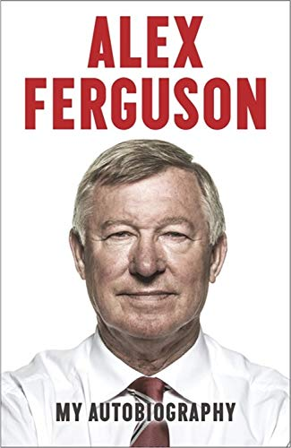

Manchester United Football Club is a professional football club based in Old Trafford, Greater Manchester, England, that competes in the Premier League, the top flight of English football. Nicknamed "the Red Devils", the club was founded as Newton Heath LYR Football Club in 1878, changed its name to Manchester United in 1902 and moved to its current stadium, Old Trafford, in 1910.
History
Manchester United was formed in 1878 as Newton Heath LYR Football Club by the Carriage and Wagon department of the Lancashire and Yorkshire Railway (LYR) depot at Newton Heath.The team initially played games against other departments and railway companies, but on 20 November 1880, they competed in their first recorded match; wearing the colours of the railway company – green and gold – they were defeated 6–0 by Bolton Wanderers' reserve team.By 1888, the club had become a founding member of The Combination, a regional football league. Following the league's dissolution after only one season, Newton Heath joined the newly formed Football Alliance, which ran for three seasons before being merged with the Football League. This resulted in the club starting the 1892–93 season in the First Division, by which time it had become independent of the railway company and dropped the "LYR" from its name. After two seasons, the club was relegated to the Second Division.
In January 1902, with debts of £2,670 – equivalent to £280,000 in 2019[nb 1] – the club was served with a winding-up order. Captain Harry Stafford found four local businessmen, including John Henry Davies (who became club president), each willing to invest £500 in return for a direct interest in running the club and who subsequently changed the name; on 24 April 1902, Manchester United was officially born.[nb 2] Under Ernest Mangnall, who assumed managerial duties in 1903, the team finished as Second Division runners-up in 1906 and secured promotion to the First Division, which they won in 1908 – the club's first league title. The following season began with victory in the first ever Charity Shield and ended with the club's first FA Cup title. Manchester United won the First Division for the second time in 1911, but at the end of the following season, Mangnall left the club to join Manchester City.
In 1922, three years after the resumption of football following the First World War, the club was relegated to the Second Division, where it remained until regaining promotion in 1925. Relegated again in 1931, Manchester United became a yo-yo club, achieving its all-time lowest position of 20th place in the Second Division in 1934. Following the death of principal benefactor John Henry Davies in October 1927, the club's finances deteriorated to the extent that Manchester United would likely have gone bankrupt had it not been for James W. Gibson, who, in December 1931, invested £2,000 and assumed control of the club.In the 1938–39 season, the last year of football before the Second World War, the club finished 14th in the First Division
Alex Ferguson and his assistant Archie Knox arrived from Aberdeen on the day of Atkinson's dismissal,and guided the club to an 11th-place finish in the league. Despite a second-place finish in 1987–88, the club was back in 11th place the following season. Reportedly on the verge of being dismissed, victory over Crystal Palace in the 1990 FA Cup Final replay (after a 3–3 draw) saved Ferguson's career. The following season, Manchester United claimed its first Cup Winners' Cup title and competed in the 1991 UEFA Super Cup, beating European Cup holders Red Star Belgrade 1–0 in the final at Old Trafford. A second consecutive League Cup final appearance followed in 1992, in which the team beat Nottingham Forest 1–0 at Wembley. In 1993, the club won its first league title since 1967, and a year later, for the first time since 1957, it won a second consecutive title – alongside the FA Cup – to complete the first "Double" in the club's history. United then became the first English club to do the Double twice when they won both competitions again in 1995–96, before retaining the league title once more in 1996–97 with a game to spare.
A white football player with short, dark, greying hair. He is wearing a red shirt, white shorts, white socks and white football boots. He is running and has puffed-out cheeks.
Ryan Giggs is the most decorated player in English football history.
In the 1998–99 season, Manchester United became the first team to win the Premier League, FA Cup and UEFA Champions League – "The Treble" – in the same season. Losing 1–0 going into injury time in the 1999 UEFA Champions League Final, Teddy Sheringham and Ole Gunnar Solskjær scored late goals to claim a dramatic victory over Bayern Munich, in what is considered one of the greatest comebacks of all time. The club also won the Intercontinental Cup after beating Palmeiras 1–0 in Tokyo. Ferguson was subsequently knighted for his services to football.
Manchester United won the league again in the 1999–2000 and 2000–01 seasons. The team finished third in 2001–02, before regaining the title in 2002–03.They won the 2003–04 FA Cup, beating Millwall 3–0 in the final at the Millennium Stadium in Cardiff to lift the trophy for a record 11th time. In the 2005–06 season, Manchester United failed to qualify for the knockout phase of the UEFA Champions League for the first time in over a decade, but recovered to secure a second-place league finish and victory over Wigan Athletic in the 2006 Football League Cup Final. The club regained the Premier League in the 2006–07 season, before completing the European double in 2007–08 with a 6–5 penalty shoot-out victory over Chelsea in the 2008 UEFA Champions League Final in Moscow to go with their 17th English league title. Ryan Giggs made a record 759th appearance for the club in that game, overtaking previous record holder Bobby Charlton. In December 2008, the club won the 2008 FIFA Club World Cup and followed this with the 2008–09 Football League Cup, and its third successive Premier League title. That summer, Cristiano Ronaldo was sold to Real Madrid for a world record £80 million. In 2010, Manchester United defeated Aston Villa 2–1 at Wembley to retain the League Cup, its first successful defence of a knockout cup competition.
After finishing as runner-up to Chelsea in the 2009–10 season, United achieved a record 19th league title in 2010–11, securing the championship with a 1–1 away draw against Blackburn Rovers on 14 May 2011. This was extended to 20 league titles in 2012–13, securing the championship with a 3–0 home win against Aston Villa on 22 April 2013

Once you bid farewell to discipline you say goodbye to success.
Ferguson says that he saw Manchester United "change from a conventional football club to what is now a major business enterprise and he never failed to move with the times." He says that it was nothing other than his "man-management" skills that helped him to deal with the global stars. His relationship with Cristiano Ronaldo has got special importance in the book. He says that he never wanted Ronaldo to join Real Madrid. In this book, he expresses his feelings about David Beckham, Ryan Giggs, etc. He mentions for the first time how he was against Beckham's decision to join his son's football team as head coach.
"I tell the players that the bus is moving. This club has to progress. And the bus wouldn’t wait for them. I tell them to get on board". Sir Alex Ferguson
Glories
Manchester United are one of the most successful clubs in Europe in terms of trophies won.[206] The club's first trophy was the Manchester Cup, which it won as Newton Heath LYR in 1886.[207] In 1908, the club won its first league title, and won the FA Cup for the first time the following year. Manchester United won the most trophies in the 1990s; five league titles, four FA Cups, one League Cup, five Charity Shields (one shared), one UEFA Champions League, one UEFA Cup Winners' Cup, one UEFA Super Cup and one Intercontinental Cup.
The club holds the record for most top-division titles (20) – including a record 13 Premier League titles – and FA Community Shields (21). It was also the first English club to win the European Cup in 1968, and, as of 2017, is the only British club to have won the Club World Cup, in 2008. United also became the sole British club to win the Intercontinental Cup, in 1999. The club's most recent trophy came in May 2017, with the 2016–17 UEFA Europa League.
In winning the 2016–17 UEFA Europa League, United became the fifth club in history to have won the "European Treble" of European Cup/UEFA Champions League, European Cup Winners' Cup/UEFA Cup Winners' Cup, and UEFA Cup/UEFA Europa League after Juventus, Ajax, Bayern Munich and Chelsea.
Futures of Pogba and Lukaku top of Solskjaer's summer to-do list at Man United
Ole Gunnar Solskjaer says Manchester United have received no bids for their players over the summer.
PERTH, Australia -- After landing in Perth to begin preparations for the new campaign, Manchester United manager Ole Gunnar Solskjaer puffed out his cheeks and said, "It's been a long summer."
He said it with a smile, but it was a reference to the problems that have piled up since the end of last season.
Star midfielder Paul Pogba says he wants to leave. Romelu Lukaku wants to join Inter Milan. Victor Lindelof's agent says the Swede could be tempted by a move to Barcelona.